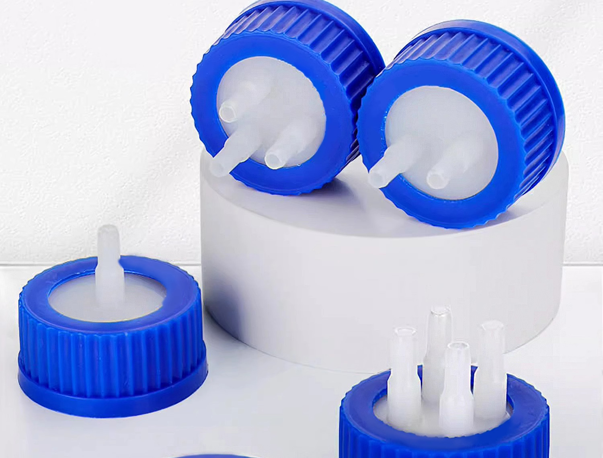

Standard Fluidic Components Catalog
High-compatibility, cost-effective replacement components for analytical HPLC laboratories, solvent safety recovery, and industrial inkjet ink delivery systems.
Laboratory Safety & Waste Containment
Engineered for organic solvent mobile phase delivery and hazardous waste containment, protecting laboratory environments from toxic vapor emissions.

GL45 Solvent Supply Caps (1 / 2 / 3 / 4 Ports)
Delivers HPLC mobile phases smoothly without air lock or chemical leaching.
- Thread Specification: Standard GL45 ISO Thread (Fits Duran, Corning, DWK, Wheaton)
- Tubing Compatibility: Fits 1/8" (3.2mm) & 1/16" (1.6mm) OD PTFE/PEEK tubing
- Core Material: High-purity Virgin PTFE / PEEK inner core with PP outer cap
- Pressure Rating: Up to 0.5 bar air-tight seal; temperature resistance up to 138°C
- Valve Option: Air inlet check valve (prevents vacuum & blocks dust particle contamination)
HPLC Waste VOC Exhaust Filters & Adapters
Captures hazardous toxic solvent vapors during waste liquid collection.
- Adsorbent Media: Modified chemical-grade activated carbon + 0.2µm PTFE air vent filter
- Target Solvents: Traps 99%+ Methanol, Acetonitrile, Isopropanol & Organic VOCs
- Service Life: 6-month operational capacity with optional color saturation indicator
- Barbed Fittings: Fits 2.0mm to 4.0mm ID flexible waste collection tubes
- Adapter Compatibility: Fits GL45 waste caps, S60/S70 industrial drum adapters
Chromatography Hardware & PEEK Components
Standardized inert fluid path hardware, precision tubing, high-pressure connectors, and cutting tools ensuring zero dead-volume and leak-free sealing.
Virgin PTFE / PEEK Tubing
- OD 1/8" (3.2mm) & 1/16" (1.6mm)
- Translucent PTFE / High-pressure PEEK
- Precise ID control for pulse-free flow
- Smooth inner surface prevents particle adherence
1/4"-28 UNF & M6 Fittings
- PP, PEEK, ETFE flangeless nuts & ferrules
- Hand-tight leak-free sealing up to 100 bar
- Zero dead-volume fluidic manifolds
- Re-usable without damaging tube ends
Solvent Inlet Sinkers
- Porous SS316L stainless steel & 100% PTFE
- Pore Rating: 10µm / 20µm porosity
- Ensures full bottle suction without residue
- Protects HPLC check valves & pump seals
Clean-Cut Precision Tubing Cutter
Handheld guillotine cutter designed for perpendicular 90° square cuts on polymer tubing.
- 90° Perpendicular Cut: Eliminates dead volume and peak broadening in HPLC fittings
- Burr-Free Operation: Slices cleanly without collapsing inner diameter walls
- Tubing Range: 1/16" (1.59mm) and 1/8" (3.18mm) OD PEEK, PTFE, FEP, ETFE
- Safety Design: Enclosed replaceable blade with ergonomic grip
Filtration & Sample Preparation Media
High-purity microporous membranes, disposable syringe filters, and heavy-duty capsule filters for analytical sample clarification and industrial protection.
HPLC Certified Syringe Filters
Color-coded microporous filters for rapid sample clarification and UHPLC column protection.
- Membranes: PES, PTFE, Nylon, PVDF, PP, Glass Fiber (GF)
- Diameters: 13mm (<10mL sample), 25mm (10-100mL), 33mm (>100mL)
- Pore Sizes: 0.22 µm (Sterilizing/UHPLC) & 0.45 µm (Standard HPLC)
- Inlet/Outlet: Female Luer Lock inlet / Male Luer Slip outlet
High-Purity Capsule & Inkjet Disc Filters
Thermally bonded filtration units for solvent degassing and industrial printhead protection.
- Filter Types: Hydrophobic PTFE Capsule Filters, 42mm/50mm Disc Filters
- Pore Ratings: 0.1µm, 0.22µm, 0.45µm, 1.0µm absolute ratings
- Housing Material: Virgin Polypropylene (PP) without glues or adhesives
- Applications: Solvent degassing, gas venting, UV/solvent inkjet ink delivery
Quick Membrane Selection Matrix
| Membrane | Type | Chemical Compatibility | Primary Application |
|---|---|---|---|
| PES | Hydrophilic | Aqueous solutions, low protein binding | Cell culture, biological buffer prep |
| PTFE | Hydrophobic/Philic | Aggressive organic solvents, acids/bases | HPLC mobile phase & harsh organic prep |
| Nylon | Hydrophilic | Broad organic & aqueous solvents | General HPLC sample clarification |
Need Custom Laser Etching or Private Packaging?
We support low MOQ (20-50 pcs) branding for regional distributors.
Contact Our Sourcing Team